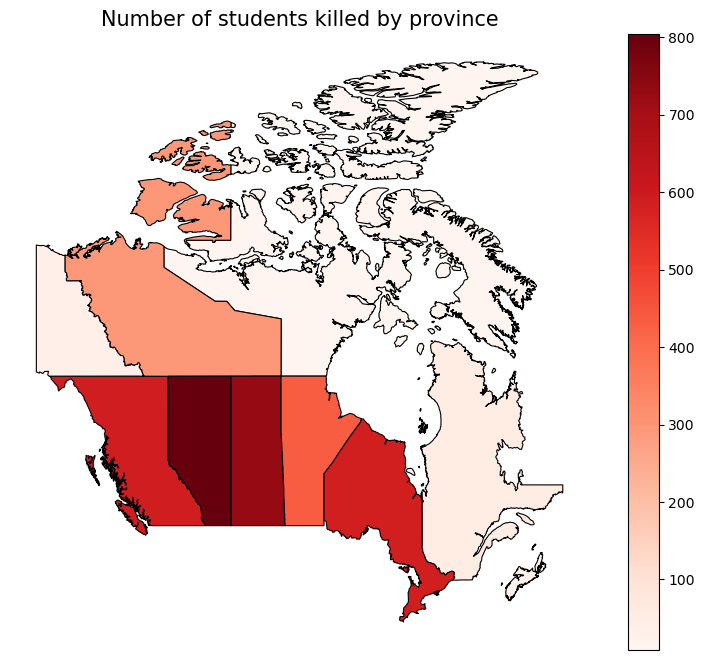

Creating a map of residential school deaths across Canada
Table of Contents
1. Hello
Orange Shirt day passed a few days ago, and with it we mourn the loss of thousands1 of Indigenous peoples at the hands of residential schools. In this piece, we will be trying to scrape the locations of all of the schools where these children were killed, and compile a map of sorts, with the locations of these residential schools, along with some cool heatmap type stuff. Let's get started.
2. The data
For the data, we will use the data provided by the National Centre for Truth and Reconciliation on residential schools. They're as trustworthy of a source you can get on this topic2. More specifically, we're going to be using the Residential Schools Archive. I was originally going to go through the National St6udent Memorial Register, but because we're focusing on the schools themselves the flow would look like
(for every student) click on memorial for student get redirected to the profile for the school add 1 student murdered to the entry for that school in the database
in contrast, the flow we go through is
(for every school) click on profile count the number of students add that number, along with the name of the town and school to the database
which is quite a bit more efficient. Along with saving my parents money on the Wi-Fi, because this is pretty unambiguously web scraping, it's best to try not to overstay your welcome. On that note, this is actually my first experience with web scraping, and that's what this section will mostly focus on. Let's get into the code
import requests from bs4 import BeautifulSoup import csv import time import random
These are some pretty standard libraries. requests is used to access webpages using Python, Beautiful Soup is used for parsing HTML3, csv is used for reading and (in our case) writing to CSV files, and time and random should both be pretty self-explanatory. Next, let's define our variables:
LIST_URL = "https://nctr.ca/residential-schools/page/{}/" HEADERS = {"User-Agent": "The Bolt - Holy Trinity Catholic High School, Simcoe, Ontario - Deployed by Amitav Krishna (akrishna0511@bhncdsb.ca). Data is being scraped in order to create a map of deaths through residential schools across Canada. NOT APPROVED BY SCHOOL ADMINISTRATION, IF YOU HAVE ANY CONCERNS, PLEASE DIRECT THEM TO akrishna0511@bhncdsb.ca."}
Now, the first variable is pretty self-explanatory, that's the URL at which the list of schools is. The {} will be used later in conjunction with Python's format() function to replace it with the page number. Headers, on the other hand, are the METADATA around the message. There are two types of headers: request headers, which describe the client (you) and what you're looking for, and response headers, which describe stuff about the message, like the its type, the time the response was sent, the length, etc. In this case, we're modifying the User-Agent header in order to give the website information about who (the scraper) is. Another thing to check when doing scraping is the robots.txt, which basically describes who's allowed to do what where. In the case of this website, the robots.txt is very permissive, allowing any User-agent and only disallowing the /wp-admin/ path, from which they likely manage their WordPress. Next, let's define a few functions that will be useful. Firstly, getting the schools from a page:
def get_schools_from_page(url): r = requests.get(url, headers=HEADERS) if r.status_code != 200: return [] soup = BeautifulSoup(r.text, "lxml") links = [] for art in soup.select("article.mb-12"): a = art.select_one("h2 a[href*='/residential-schools/']") if not a: continue href = a.get("href") name = a.text.strip() links.append((name, href)) return links
This is pretty self-explanatory. We use requests to fetch the webpage. We then use BeautifulSoup to build a tree structure out of the tags, then we go through every article tag in the page with the class mb-12, and fetch one a tag (used to link to other pages) going to the subdomain of /residential-schools/. This may seem oddly specific, and that's because it is specific. The scraping we will do in this article is not very generalizable, because we want very structured data. Most of the time, I come up with the selects by just viewing the source of the page (CTRL+U in Firefox) and using find in page (CTRL+F in Firefox) to find the necessary content. We then fetch what that's linking to, and what the text of the tag is. Finally we package those into a tuple and chuck it into a list of links to be returned.
def get_school_data(url): r = requests.get(url, headers=HEADERS) soup = BeautifulSoup(r.text, "lxml") title = soup.find("title").get_text(strip=True) province = soup.find("span", class_="byline author vcard font-semibold").get_text(strip=True) desc = soup.find("p").get_text(strip=True) if soup.find("p") else "" num_children = len(soup.select(".related-students-table-body tr")) return { "school_name": title.replace(" - NCTR", ""), "province": province, "location_text": desc, "num_children": num_children, "url": url }
There's again some more boilerplate lines at the top, and then the rest of the lines are used to find information about the school. The num_children variable used here is definitely not descriptive enough, because it's actually referring to the number of children that went to the school and never went home, however that's what it is in all of my documents because I only realized there's insufficient info there while writing this, and running the script again would be a bit of a pain. I found what needed to be selected, again, with the trusty CTRL+U and CTRL+F. Finally, putting this all together, we get
def scrape_all(): all_rows = [] page = 1 while True: url = LIST_URL.format(page) schools = get_schools_from_page(url) if not schools: break print(f"Found {len(schools)} schools on page {page}") for name, href in schools: data = get_school_data(href) all_rows.append(data) print(data) time.sleep(random.uniform(1, 3)) page += 1 with open("nctr_school_summary.csv", "w", newline="", encoding="utf-8") as f: writer = csv.DictWriter(f, fieldnames=all_rows[0].keys()) writer.writeheader() writer.writerows(all_rows)
I don't believe I've mentioned it earlier, but the residential schools archive uses what's called pagination, where instead of loading all items at once, you only send a subset of the items at a time, and then access more by accessing the other pages. For this, for every single school on the page, we scrape the info from it and then append it to our array, all_rows, and then we move on to the next page, and then repeat until we get a 404 Not Found error. We add 1 - 3 seconds in between every request, just to be a good netizen and not step on the website's toes.I'm not going to run it here, because it takes approximately ten minutes on every run, but if you want to download the data for yourself without hitting nctr's servers, you should be able to download it from here.
3. Making a map
Now, let's make a heatmap of all of the provinces
import pandas as pd import geopandas as gpd
Pandas is a Python library used for data analysis, and GeoPandas is a Python library that extends pandas to make it work with geospatial data.
data = pd.read_csv("nctr_school_summary.csv") canada = gpd.read_file( "https://raw.githubusercontent.com/codeforamerica/click_that_hood/master/public/data/canada.geojson" ) abbrs = { "AB": "Alberta", "ON": "Ontario", "SK": "Saskatchewan", "QC": "Quebec", "MB": "Manitoba", "NS": "Nova Scotia", "NT": "Northwest Territories", "NU": "Nunavut", "YT": "Yukon Territory", "BC": "British Columbia" }
And, we've used them! The first line is used to read the data from the CSV we've created, and the second one loads a GeoJSON file, which is a text format used to describe shapes with lattitude and longitude. I'm not going to go into detail on that, and would recommend you DuckDuckGo it if you're interested in learning more. Finally, we will use that dictionary to convert between the abbreviated names used for the provinces by the National Centre for Truth and Reconciliation and the names used by the GeoJSON format.
def extract_province(province:str) -> str: if "," in province: return province.split(", ")[-1].strip().upper() return None
We use this to extract the province abbreviation from the location (e.g. "Simcoe, ON" -> "ON").
data["province_abbrev"] = data["province"].apply(extract_province) data["province"] = data["province_abbrev"].map(abbrs)
Firstly, we apply the extract_province function to every item in the province column of our data, and then extract that out into a new column. Then, we set each of the items in the province column to the mapping of the corresponding item in the province_abbrev column.
summary = data.groupby("province", as_index=False)["num_children"].sum() merged = canada.merge(summary, left_on="name", right_on="province", how="left")
The first line creates a new DataFrame, in which all of the rows in data are grouped by the province, and for each group, we sum the num_children column, making a DataFrame in which there's just a single row per province, containing the number of children. Then the second line merges the two dataframes. It finds the name (represents province names) and matches each row to the corresponding row in summary where summary.province == canada.name. It also keeps all rows from canada and attaches the matching num_children values. Now, we can finish our plotting:
import matplotlib.pyplot as plt fig, ax = plt.subplots(1, 1, figsize=(10, 8)) merged.plot( column="num_children", cmap="Reds", linewidth=0.8, edgecolor="black", legend=True, ax=ax ) ax.set_title("Number of students killed by province", fontsize=15) ax.axis("off") plt.show()

Matplotlib's a really common library used for data visualization, and is the library we will use for data visualization. fig is the whole canvas size, while ax is the length of the axes. Next, we plot our map, with the column for each province being num_children, and each province being more red the more children have died in residential schools there. We set the title, turn off the axes, and then plot.
Footnotes:
Do note that this is NOT a comprehensive list of all those murdered by the residential school system by any means. The National Centre for Truth and Reconciliation is still investigating to this day. If you know any students who died or are believed or known to have gone missing from a residential school, contact them here to have their name added to the memorial. Also, interestingly, NCTR claims to have 4,300, however taking the sum of the num_students column only yields 3,625. I thought it might be a flaw with my scraping, however scraping every student on the official National Student Memorial Register gets us the same thing:
import requests from bs4 import BeautifulSoup r = requests.get("https://nctr.ca/missing-children-and-unmarked-burials-initiative/national-student-memorial-register/") soup = BeautifulSoup(r.text, "lxml") count = 0 for student in soup.select(".student-name"): count+=1 print(count)
3625
For somebody unfamiliar with web development, this may seem like a distinction without a difference. Imagine the Internet like the postal service, and imagine HTML as some foreign language, like French. requests is used to send and recieve mail from other places around the World Wide Web, while BeautifulSoup is used as a sort of translator. A reasonable follow-up question would then be, "Well, why do we use HTML then, instead of plain text?" We use HTML because it provides relatively simple framework for structuring web pages. I'm of the opinion that if HTML had never taken off, there would be some other thing functionally identical to HTML that would take its place. As Voltaire never said, "If [HTML] did not exist, it would be necessary to invent [it]."